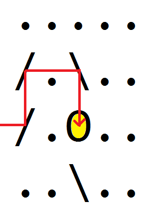
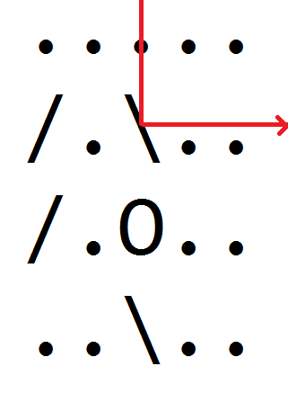

2차원 격자 공간상에 45도 또는 135도로 기울어진 거울과 전등이 놓여있다.
공간 밖에서부터 가로 또는 세로 방향에 평행한 레이저를 발사하고자 한다.
레이저가 전등을 맞추게 되면 전등에 불이 들어온다.
레이저가 거울을 만나는 경우 거울이 기울어진 방향에 따라 진행방향이 90도 꺾인다.
전등에 불을 켜기 위해 쏴야 하는 레이저의 방향을 하나 찾으시오.
전등에 불을 켤 수 없는 경우는 입력으로 들어오지 않는다.
성공적으로 전등에 불을 켠 경우:

거울에 반사되어 전등에 불을 켜지 못한 경우:

첫 줄에 두 숫자 W, H가 주어진다. (1 ≤ W ≤ 30, 1 ≤ H ≤ 30)
다음 줄부터 W 길이의 문자열이 H개 주어진다.
각 문자열은 ., /, \`,O`의 4 종류의 글자로 이루어져 있으며
각각 빈칸, 45도 거울, 135도 거울, 전등을 뜻한다.
레이저를 쐈을 때 전등에 불을 켤 수 있는 위치를 하나 출력한다.
쏘는 방향에 따라 아래와 같은 양식으로 출력한다.
L <위에서부터 몇 번째 칸인지>R <위에서부터 몇 번째 칸인지>U <왼쪽에서부터 몇 번째 칸인지>D <왼쪽에서부터 몇 번째 칸인지>맨 위 칸, 맨 왼쪽 칸을 0번째 칸으로 친다.
5 4 ..... /.\.. /.O.. ..\..
L 2
O에 불을 켜기 위해 가능한 출력은 L 2, R 2, D 0, R 3 의 4가지가 있으며 그 중 하나를 출력하면 답이 된다.
모든 숨겨진 입력 데이터에 대해 정답이면 만점을 주고, 하나라도 틀리면 점수를 주지 않는다.